정보처리산업기사 (2007-09-02 기출문제)
1과목: 데이터 베이스
1. 정보(Information)의 의미로 거리가 먼 것은?
- 자료(Data)를 처리하여 얻은 결과
- 사용자가 목적하는 값
- 현실 세계에서 관찰을 통해 얻은 값
- 의사 결정을 위한 값
(정답률: 75%)

2. DBMS의 필수기능 중 무결성, 보안, 병행제어 등과 관련되는 것은?
- 정의 기능
- 조작 기능
- 운영 기능
- 제어 기능
(정답률: 72%)
3. 데이터베이스의 3단계 스키마 구조에 대한 설명으로 옳지 않은 것은?
- 내부적 스키마는 데이터베이스의 논리적 저장 구조를 묘사한다.
- 외부적 스키마는 데이터베이스 전체에서 특정 사용자 그룹이 관심을 가지고 있는 일부분만을 묘사한다.
- 데이터베이스 관리 시스템은 외부적 스키마에 따라 명시된 사용자의 요구를 개념적 스키마에 적합한 형태로 변경하고 이를 다시 내부적 스키마에 적합한 형태로 변환한다.
- 개념적 수준에서는 사용자 집단을 위한 전체 데이터베이스의 구조를 묘사한다.
(정답률: 43%)
4. 후위 표기(Postfix)식이 다음과 같을 때 식의 계산 값은?(단, 각 수치는 한 자리 숫자를 의미한다.)
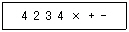
- 6
- 7
- 14
- -10
(정답률: 66%)
5. 관계대수와 관계해석에 대한 설명으로 옳지 않은 것은?
- 관계대수는 원하는 정보가 무엇이라는 것만 정의하는 비절차적 특징을 가지고 있다.
- 기본적으로 관계대수와 관계해석은 관계 데이터베이스를 처리하는 기능과 능력면에서 동등하다.
- 관계해석에는 튜플 관계해석과 도메인 관계해석이 있다.
- 관계해석은 수학의 프레디킷 해석(Predicate Calculus)에 기반을 두고 있다.
(정답률: 70%)
6. 제 2정규형에서 제 3정규형이 되기 위한 조건은?
- 원자값이 아닌 도메인을 분해
- 부분 함수 종속 제거
- 이행 함수 종속 제거
- 후보키를 통하지 않은 조인 종속 제거
(정답률: 86%)
7. E-R 모델에 관한 설명으로 옳지 않은 것은?
- 개체 타입은 타원, 관계 타입은 사각형, 속성은 선으로 표현한다.
- 개체 타입과 이들 간의 관계 타입을 이용한다.
- E-R 모델에서는 데이터를 개체, 관계, 속성으로 묘사한다.
- 현실 세계가 내포하는 의미들이 포함된다.
(정답률: 82%)
8. 계층형 데이터 모델의 특징이 아닌 것은?
- 개체 타입 간에는 상위와 하위 관계가 존재한다.
- 개체 타입들 간에는 사이클(Cycle)이 허용된다.
- 루트 개체 타입을 가지고 있다.
- 링크를 사용하여 개체와 개체 사이의 관계성을 표시한다.
(정답률: 65%)
9. 자료가 다음과 같을 때, 삽입(Insertion) 정렬 방법을 적용하여 오름차순으로 정렬할 경우 Pass 2를 수행한 결과는?
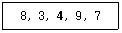
- 3 8 4 9 7
- 3 4 8 9 7
- 3 4 7 9 8
- 3 4 7 8 9
(정답률: 81%)
10. 뷰(View)에 대한 설명으로 옳지 않은 것은?
- 뷰는 데이터의 접근을 제어하게 함으로써 보안을 제공한다.
- 뷰는 데이터의 논리적인 독립성을 제공한다.
- 뷰의 테이블은 가상 테이블이다.
- 뷰의 테이블은 물리적인 구현으로 구성되어 있다.
(정답률: 82%)
11. 다음 ( ) 안의 내용으로 알맞은 것은?
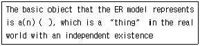
- Model
- Entity
- Domain
- Relation
(정답률: 71%)
12. 선형 구조가 아닌 것은?
- 리스트
- 그래프
- 스택
- 배열
(정답률: 86%)
13. 다음 ( ) 안의 내용에 적합한 단어는?
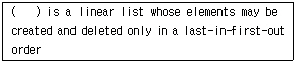
- Stack
- Queue
- List
- Tree
(정답률: 82%)
14. 관계 모델에서의 무결성을 제약하는 방법으로, 기본키의 값은 널(Null)일 수 없다는 무결성 조건은?
- 개체 무결성
- 참조 무결성
- 도메인 무결성
- 관계 무결성
(정답률: 82%)
15. 릴레이션에 대한 설명으로 적합하지 않은 것은?
- 릴레이션은 릴레이션 스키마와 릴레이션 인스턴스로 구성된다.
- 릴레이션 스키마는 한 릴레이션의 논리적 구조를 기술한 것이다.
- 릴레이션 인스턴스는 구조를 나타내며, 릴레이션 스키마는 실제 값들을 나타낸다.
- 릴레이션의 스키마는 정적인 성질을 가지며, 릴레이션 인스턴스는 동적인 성질을 가진다.
(정답률: 59%)
16. A, B, C, D의 순서로 정해진 입력 자료를 스택에 입력하였다가 출력한 결과가 될 수 없는 것은? (단, 왼쪽부터 먼저 출력된 순서이다.)
- C, B, A, D
- C, D, A, B
- B, A, D, C
- B, C, D, A
(정답률: 66%)
17. 색인 순차 파일(ISAM`;`Indexed Sequential Access Method)에 관한 설명으로 옳지 않은 것은?
- 순차 처리와 랜덤 처리가 모두 가능하다.
- 레코드를 추가 및 삽입하는 경우, 파일 전체를 복사할 필요가 없다.
- 기본 구역(Prime Data Area), 색인 구역(Index-Area), 오버플로 구역(Overflow Area)으로 구성되어 있다.
- 해시 함수를 사용하여 레코드 저장 위치를 결정한다.
(정답률: 52%)
18. 널(NULL) 값에 대한 설명으로 부적합한 것은?
- 부재(Missing) 정보를 의미한다.
- 알려지지 않은 값을 의미한다.
- 영(Zero)의 값을 의미한다.
- 널(NULL) 값은 혼란을 야기할 수 있다.
(정답률: 79%)
19. 다음 SQL 명령어 중 DDL에 해당하는 것은?
- SELECT
- UPDATE
- DELETE
- ALTER
(정답률: 82%)
20. 릴레이션(Relation)의 특징이 아닌 것은?
- 중복된 튜플이 존재하지 않는다.
- 튜플 간의 순서가 있다.
- 속성 간의 순서는 없다.
- 모든 속성값은 원자값을 갖는다.
(정답률: 78%)
2과목: 전자 계산기 구조
21. 다음 중 기능이 다른 연산자는?
- Complement
- OR
- AND
- Exclusive OR
(정답률: 83%)
22. 컴퓨터 주기억장치의 용량이 256MB라면 주소 버스의 폭은 최소한 몇 Bit 이어야 하는가?
- 24
- 26
- 28
- 30
(정답률: 66%)
23. 다음의 주소지정 방식 중 명령어가 피연산자의 주소가 아닌 피연산자의 주소가 저장된 곳의 주소를 나타내고 있는 방식은?
- Indirect Addressing
- Relative Addressing
- Immediate Addressing
- Direct Addressing
(정답률: 72%)
24. 한글 2바이트 조합형 코드에서 한글과 영문을 구분하기 위한 비트 수는?
- 1 비트
- 2 비트
- 3 비트
- 4 비트
(정답률: 66%)
25. 다음 중 플립플롭으로 구성할 수 없는 것은?
- Counter
- Register
- RAM
- 주파수 판별기
(정답률: 67%)
26. 10진수 634를 BCD Code로 표현하였을 때 옳은 것은?
- 0110 0011 0100
- 0110 0011 0011
- 0011 0011 0100
- 0011 0011 0011
(정답률: 77%)
27. 자기디스크 장치에서 읽기/쓰기 헤드(Read/Write Head)의 위치를 정하기 위해서 액세스 암(Access Arm)이 이동하는 시간을 무엇이라고 하는가?
- Search Time
- Seek Time
- Data Transfer Time
- Delay Time
(정답률: 67%)
28. 명령 코드의 비트는 주소 필드(Field)를 가지고 있다. 이 주소 필드의 기능은?
- 누산기를 지정한다.
- 오퍼랜드를 선택할 수 있다.
- 레지스터를 지정할 수 있다.
- 수행할 동작을 명시할 수 있다.
(정답률: 48%)
29. 부호화된 데이터로부터 정보를 찾아내는 조합논리회로는?
- Flip-Flop
- Decoder
- Encoder
- Adder
(정답률: 67%)
30. 다음 ROM의 회로도를 보고 진리표의 A, B, C 값을 구하면?
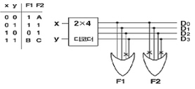
- A=0, B=1, C=0
- A=0, B=1, C=1
- A=1, B=1, C=0
- A=1, B=1, C=1
(정답률: 51%)
31. 입력 주소선이 10개, 출력 데이터선이 8개인 ROM의 기억용량은?
- 256 Byte
- 1024 Byte
- 2048 Byte
- 8292 Byte
(정답률: 61%)
32. 자기테이프 레코드의 크기가 80자로서 블록(Block)의 크기가 2400자일 경우 블록킹 인수(Blocking Factor)는?
- 40
- 30
- 25
- 20
(정답률: 78%)
33. 데이지 체인(Daisy Chain) 방식과 폴링(Polling) 방식의 설명으로 옳지 않은 것은?
- 폴링 방식은 소프트웨어 방식이다.
- 데이지 체인 방식은 하드웨어 방식이다.
- 데이지 체인 방식이 폴링 방식보다 속도가 빠르다.
- 폴링 방식이 데이지 체인 방식보다 속도가 빠르다.
(정답률: 67%)
34. 다음 일련의 Micro-Operation들은 어느 명령어 Cycle을 나타내고 있는가?
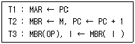
- Fetch
- Indirect
- Execution
- Interrupt
(정답률: 61%)
35. 74-2-1코드 표현에 의한 십진수 6의 값은?
- 0110
- 1100
- 1001
- 1011
(정답률: 46%)
36. 마이크로 프로세서의 연산 단위를 결정하는 기준에 포함되지 않는 것은?
- 메모리 용량
- 레지스터의 크기
- 외부 버스의 크기
- CPU 내부 버스의 크기
(정답률: 47%)
37. DRAM의 사이클 타임(Mt)과 기억장치 접근시간(At)의 관계식으로 옳은 것은?
- Mt >= At
- Mt = At
- Mt <= At
- Mt < At
(정답률: 61%)
38. 인터럽트 반응 시간(Interrupt Response Time)에 대한 설명으로 옳은 것은?
- 인터럽트 요청 신호를 발생한 후 부터 인터럽트 취급 루틴의 수행이 시작될 때까지이다.
- 일반적으로 하드웨어에 의한 방식이 소프트웨어에 의한 처리보다 느리다.
- 인터럽트 반응 속도는 하드웨어나 소프트웨어에 필요한 기억 공간에 의한 영향이 없다.
- 인터럽트 요청 신호의 발생 후부터 취급 루틴의 수행이 완료될 때까지의 시간이다.
(정답률: 56%)
39. 그림과 같은 연산회로에서 얻어지는 마이크로 동작은?(단, A, B, C는 입력이고, Y는 출력이다)
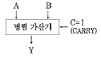
- A를 1 증가
- 감산
- A를 전송
- A를 1 감소
(정답률: 62%)
40. 다음 게이트의 출력은? (단, A=B=C=1)
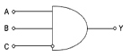
- 0
- 1
- AB
- C
(정답률: 67%)
3과목: 시스템분석설계
41. 구조적 분석의 특징이 아닌 것은?
- 시스템 모형화에 필요한 도구를 제공한다.
- 시스템을 분할하여 분석할 수 있다.
- 상향식 분석으로 중복성을 배제하여 시스템 분석의 질을 높일 수 있다.
- 전체 시스템을 일관성 있게 이해할 수 있다.
(정답률: 70%)
42. 파일 설계 시 파일 매체 검토 단계에서의 기능 검토 사항이 아닌 것은?
- 파일의 활동률 검토
- 정보량의 검토
- 조작의 용이성 검토
- 처리 시간의 검토
(정답률: 49%)
43. 십진 분류 코드의 특징이 아닌 것은?
- 배열이나 집계 용이
- 코드의 범위 확장 용이
- 자료의 삽입 및 추가 용이
- 기계 처리가 용이
(정답률: 77%)
44. 출력 방식에 의한 분류 중 다음 설명에 해당하는 것은?
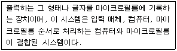
- 디스플레이 출력 시스템
- 파일매체 출력 시스템
- COM 시스템
- 음성출력 시스템 방식
(정답률: 76%)
45. 모듈 작성 시 주의사항으로 옳지 않은 것은?
- 적절한 크기로 작성한다.
- 결합도는 최대화하고 응집도는 최소화한다.
- 모듈의 내용이 다른 곳에도 적용 가능하도록 표준화 한다.
- 보기 좋고 이해하기 쉽게 작성한다.
(정답률: 82%)
46. 코드화 대상 항목의 길이, 넓이, 부피, 무게 등을 나타내는 문자, 숫자 혹은 기호를 그대로 코드로 사용하는 코드는?
- Group Classification Code
- Decimal Code
- Significant Digit Code
- Combined Code
(정답률: 74%)
47. 입력 설계 순서가 옳게 나열된 것은?
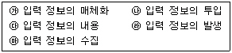
- ㉮→㉯→㉰→㉱→㉲
- ㉱→㉲→㉮→㉯→㉰
- ㉮→㉱→㉯→㉲→㉰
- ㉱→㉮→㉲→㉯→㉰
(정답률: 80%)
48. 시스템 개발주기의 시스템 개발 단계 순서로 가장 적합한 것은?
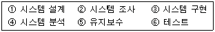
- ②→④→③→①→⑥→⑤
- ②→④→①→③→⑥→⑤
- ①→②→③→④→⑥→⑤
- ①→②→④→③→⑤→⑥
(정답률: 81%)
49. 컴퓨터 입력 단계에서의 오류 검사 방법 중 차변과 대변의 합일치를 검사하는 방법은?
- Balance Check
- Limit Check
- Sequence Check
- Matching Check
(정답률: 63%)
50. HIPO 기법에 대한 설명으로 옳지 않은 것은?
- 체계화된 문서 작성이 가능하다.
- 상향식(Bottom-Up) 방식을 사용하여 나타낸다.
- 유지보수 및 변경이 용이하다.
- 도표 상에 기능 위주로 입력 내용, 처리 방법, 출력 내용이 제시되므로 시스템의 이해가 쉽다.
(정답률: 75%)
51. 코드 “34275”를 “34575”와 같이 기록하는 것으로 디지트를 잘못 읽어 한 글자를 잘못 기록하는 오류는?
- 필사 오류(Transcription Error)
- 전위 오류(Transposition Error)
- 생략 오류(Missing Error)
- 임의 오류(Random Error)
(정답률: 79%)
52. 시스템 도입 시 고려 사항으로 거리가 먼 것은?
- 컴퓨터 시스템의 호환성
- 소요 예산 및 운영조직 확보
- 기기 규모의 적정성
- 프로그래머의 기술 능력
(정답률: 79%)
53. 프로세스 설계 시 유의사항이 아닌 것은?
- 오퍼레이터 개입을 최소화 한다.
- 하드웨어의 기기 구성과 처리 능력을 고려한다.
- 신뢰성과 정확성을 고려한다.
- 분류 처리는 가급적 최대화 한다.
(정답률: 80%)
54. 표준 처리 패턴 중 다음 설명이 의미하는 것은?
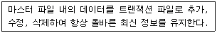
- 갱신
- 병합
- 정렬
- 분배
(정답률: 85%)
55. 해싱 함수에서 같은 주소를 갖는 레코드의 집합을 의미 하는 것은?
- Bucket
- Synonym
- Collision
- List
(정답률: 70%)
56. 시스템의 특성 중 다음 설명에 해당하는 것은?
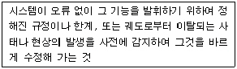
- 목적성
- 정보성
- 제어성
- 종합성
(정답률: 84%)
57. 출력 설계 단계 중 출력 정보 분배에 대한 설계 시 검토사항으로 거리가 먼 것은?
- 분배 책임자
- 분배 경로
- 분배 주기 및 시기
- 출력 정보명
(정답률: 61%)
58. 입력되는 데이터들을 논리적인 순서에 따라 물리적 연속 공간에 순차적으로 기록하는 방식으로 주로 자기 테이프에 사용되며, 일괄 처리 중심의 업무 처리에 많이 이용되는 파일 편성 방법은?
- 색인 순차 편성
- 순차 편성
- 리스트 편성
- 랜덤 편성
(정답률: 66%)
59. 객체지향의 기본 개념 중 다음 설명에 해당하는 것은?
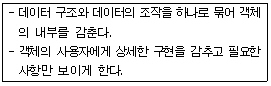
- Class
- Inheritance
- Encapsulation
- Object
(정답률: 69%)
60. 시스템 문서화의 필요성에 대한 이유로 거리가 먼 것은?
- 시스템 유지보수의 용이성을 위해
- 업무 인수인계 시 그 업무 내용을 쉽게 파악하기 위해
- 시스템 개발 후의 변경에 따른 혼란을 방지하기 위해
- 오류 발생 시 책임 구분을 명확히 하기 위해
(정답률: 82%)
4과목: 운영체제
61. 사용자가 로그인할 때 사용자 인증을 위해 신원을 확인하는 방법으로 적당하지 못한 것은?
- Enter 키 누름
- 지문인식장치 사용
- 패스워드 입력
- 보안카드 사용
(정답률: 88%)
62. 제어의 흐름을 의미하며, 프로세스에서 실행의 개념만을 분리한 것으로, 프로세스의 구성을 제어의 흐름 부분과 실행 환경 부분으로 나눌 때, 프로세스의 실행 부분을 담당함으로써 실행의 기본 단위가 되는 것을 무엇이라고 하는가?
- Working Set
- PCB
- Thread
- Segmentation
(정답률: 59%)
63. 비선점(Non-Preemption) 스케줄링 방식에 대한 설명 중 옳지 않은 것은?
- 대화식 시분할 시스템에 적합하다.
- 긴 작업이 짧은 작업을 오랫동안 기다리게 하는 경우가 발생할 수 있다.
- 프로세스 간의 문맥교환 횟수가 적고, 보통 일괄 처리 시스템에 적합하다.
- 한 프로세스가 일단 CPU를 할당 받으면 다른 프로세스가 CPU를 강제적으로 뺏을 수 없는 방식이다.
(정답률: 53%)
64. 자원보호기법 중 접근제어행렬을 구성하는 요소가 아닌 것은?
- 영역
- 객체
- 권한
- 시간
(정답률: 67%)
65. 교착 상태(Deadlock)는 하나 또는 둘 이상의 프로세스가 더 이상 계속할 수 없는 어떤 특정 사건을 기다리고 있는 상태를 말한다. 여기서 특정 사건의 의미로 가장 적당한 것은?
- 자원의 할당과 해제
- 자원의 요구
- 무한 연기
- 자원의 점유 및 대기
(정답률: 37%)
66. HRN(Highest Response-ratio Next) 스케줄링 기법에서 가변적 우선순위는 다음 식으로 계산된다. ①에 알맞은 내용은?
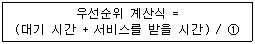
- 대기 시간
- (대기 시간 -서비스를 받을 시간)
- 서비스를 받을 시간
- (서비스를 받을 시간 - 대기 시간)
(정답률: 79%)
67. 시분할시스템(Time Sharing System)에 대한 설명으로 옳지 않은 것은?
- 다중 프로그래밍의 논리적 확장이다.
- 사용자와 시스템 간에 직접적인 통신을 제공한다.
- 동시에 많은 사용자가 컴퓨터를 공유하도록 한다.
- 시스템의 효율을 위하여 작업량을 일정 수준 모아두었다가 한꺼번에 처리한다.
(정답률: 79%)
68. UNIX에서 현재 프로세스의 상태를 확인할 때 사용되는 명령어는?
- ps
- cp
- chmod
- cat
(정답률: 63%)
69. 기억장치 관리 전략의 하나로 새로 반입할 프로그램이 들어갈 장소를 마련하기 위해 어떤 프로그램과 데이터를 제거할 것인가를 결정하는 전략은?
- 삭제(Deletion) 전략
- 교체(Replacement) 전략
- 배치(Placement) 전략
- 반입(Fetch) 전략
(정답률: 56%)
70. 프로세스를 스케줄링하는 목적으로 옳지 않은 것은?
- 모든 작업에 대해 공평성을 유지해야 한다.
- 응답 시간을 최소화해야 한다.
- 프로세스의 처리량을 최소화해야 한다.
- 경과시간의 예측이 가능하여야 한다.
(정답률: 71%)
71. 병렬 처리의 주종(Master/Slave) 시스템에 대한 설명으로 옳지 않은 것은?
- 주프로세서는 연산만 수행하고 종프로세서는 입·출력과 연산을 수행한다.
- 주프로세서만이 운영체제를 수행한다.
- 하나의 주프로세서와 나머지 종프로세서로 구성된다.
- 주프로세서의 고장 시 전 시스템이 멈춘다.
(정답률: 70%)
72. 라운드 로빈(Round-Robin) 방식으로 스케줄링 할 경우, 입력된 작업이 다음과 같고 각 작업의 CPU 할당 시간이 3시간일 때, CPU의 사용 순서가 알맞게 나열된 것은?
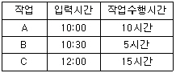
- A A A A B B C C C C C
- A A A A C C C C C B B
- A B C A B C A C A C C
- A B B C A A A C C C C
(정답률: 68%)
73. UNIX 운영체제에서 가장 핵심적인 부분으로 하드웨어를 보호하고 응용프로그램들에게 서비스를 제공해 주는 것은?
- Kernel
- Shell
- IPC
- Process
(정답률: 75%)
74. 운영체제에 대한 설명으로 옳지 않은 것은?
- 사용자에게 편리성을 제공하는 역할을 한다.
- 사용자와 컴퓨터 간의 인터페이스 역할을 한다.
- 여러 사용자 간의 자원 스케줄링을 효과적으로 한다.
- 사용자가 작성한 원시 프로그램을 기계로 번역한다.
(정답률: 81%)
75. 페이지 교체 기법 중 시간 오버헤드를 줄이는 기법으로서 참조 비트(Referenced Bit)와 변형 비트(Modified Bit)를 필요로 하는 방법은?
- FIFO
- LRU
- LFU
- NUR
(정답률: 72%)
76. 다음과 같은 트랙이 요청되어 큐에 도착하였다. 모든 트랙을 서비스하기 위하여 SSTF스케줄링 기법이 사용 되었을 때 모두 몇 트랙의 헤드 이동이 생기는가? (단, 현재 헤드의 위치는 50트랙이다.)
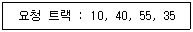
- 50
- 85
- 1⑤
- 110
(정답률: 57%)
77. 분산운영체제의 구조 중 모든 사이트는 하나의 중앙노드에 직접 연결되어 있으며, 중앙노드에 과부하가 걸리면 성능이 현저히 감소하고, 중앙노드의 고장 시 모든 통신이 이루어지지 않는 구조는?
- Ring Connection
- Star Connection
- Hierarchy Connection
- Fully Connection
(정답률: 81%)
78. 3 페이지가 들어갈 수 있는 기억장치에서 다음과 같은 순서로 페이지가 참조될 때 FIFO 기법을 사용하면 페이지 부재(Page Fault)는 몇 번 일어나는가? (단, 현재 기억장치는 모두 비어 있다고 가정한다.)
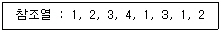
- 4
- 5
- 6
- 8
(정답률: 60%)
79. 어떤 프로세스가 실행에 필요한 수만큼의 프레임을 갖지 못하여 빈번한 페이지 부재(Page Fault)의 발생으로 프로그램 수행에 보내는 시간보다 페이지 교환에 보내는 시간이 더 큰 현상을 무엇이라 하는가?
- 요구 페이징(Demand Paging)
- 스래싱(Thrashing)
- 단편화(Fragmentation)
- 블록킹(Blocking)
(정답률: 72%)
80. UNIX의 시스템 호출 명령어 중에서 프로세스를 복제하기 위해 사용되는 명령어는?
- getpid
- gerppid
- pipe
- fork
(정답률: 62%)
5과목: 정보통신개론
81. 광대역 통신망 ATM 셀(Cell)의 구성으로 알맞은 것은?
- 헤더 5바이트, 페이로드(Payload) 53바이트
- 헤더 4바이트, 페이로드(Payload) 53바이트
- 헤더 5바이트, 페이로드(Payload) 48바이트
- 헤더 4바이트, 페이로드(Payload) 48바이트
(정답률: 66%)
82. 다음 데이터 통신 용어의 설명 중 틀린 것은?
- Repeater - 신호의 감쇠 현상을 복원해 준다.
- Modem - 신호의 변·복조장치를 뜻한다.
- Bps - 초당 전송 비트 수를 뜻한다.
- Baud - 초당 저장 바이트 수를 뜻한다.
(정답률: 78%)
83. 다음 중 IEEE 802.15 관련 규약으로 방이나 거실과 같은 좁은 지역에서 장치들을 연결시키는 근거리 무선통신 기술은?
- 블루투스
- VPN
- WAN
- 종합정보통신망
(정답률: 80%)
84. OSI 참조 모델의 각 계층과 이에 해당되는 인터넷 프로토콜에 대한 연결로 틀린 것은?
- 데이터링크 계층 - UDP
- 네트워크 계층 - IP
- 전송 계층 - TCP
- 응용 계층 - FTP
(정답률: 56%)
85. 프로토콜의 기능 중 정보 전송 시 데이터 및 제어 정보의 오류에 대비하기 위한 것은?
- 연결 제어
- 에러 제어
- 흐름 제어
- 동기 제어
(정답률: 62%)
86. 프로토콜의 구성 요소 중 전송 제어 및 오류 처리를 위한 정보 등을 규정하는 것은?
- 구문(Syntax)
- 의미(Semantics)
- 타이밍(Timing)
- 흐름 제어(Flow Control)
(정답률: 39%)
87. 통화 중에 이동전화가 한 셀에서 다른 셀로 이동할 때, 자동으로 현 통화 채널을 다른 셀의 통화 채널로 전환해 줌으로써 통화가 지속되게 하는 기능은?
- 핸드오프
- 전자기 간섭
- 진폭 변조
- 주파수 변조
(정답률: 73%)
88. 다음 중 흐름 제어, 에러 제어 및 자체 진단 기능을 갖는 일명 지능 다중화기는?
- 통계적 시분할 다중화기
- 시분할 다중화기
- 주파수 분할 다중화기
- 역다중화기
(정답률: 51%)
89. 위성 통신의 특징을 잘못 표현한 것은?
- 광대역 통신이 가능하다.
- 광범위한 지역에 서비스를 제공할 수 있다.
- 대용량, 고품질의 정보 전송이 가능하다.
- 전파 지연이 없으나 감쇠 현상이 나타날 수 있다.
(정답률: 78%)
90. 다음 중 동기식 전송 방식의 일반적인 특성과 관계없는 것은?
- 전송 속도가 비교적 빠르다.
- 단말기는 버퍼 기억장치를 갖고 있다.
- 송·수신의 동기를 위하여 동기 문자가 사용된다.
- 항상 한 묶음으로 구성된 문자 사이의 휴지 간격이 존재한다.
(정답률: 62%)
91. 동일 건물이나 인접한 건물에 있는 다양한 컴퓨터 기기들을 상호 연결하여 정보 통신망에 연결된 다른 기기나 주변 기기들과 공유할 수 있도록 설계한 네트워크는?
- 패킷 교환망(PSDN)
- 부가가치 통신망(VAN)
- 근거리 통신망(LAN)
- 공중 전화망(PSTN)
(정답률: 81%)
92. 다음 중 데이터 전달을 위한 순서적 절차로 알맞은 것은?
- 링크 확인-회로 연결-메시지 전달-회로 절단-링크 절단
- 회로 연결-링크 확립-메시지 전달-회로 절단-링크 절단
- 회로 연결-링크 확립-메시지 전달-링크 절단-회로 절단
- 링크 확립-회로 연결-메시지 전달-링크 절단-회로 절단
(정답률: 70%)
93. 다음 중 주로 OSI의 네트워크 계층까지의 기능을 수행하는 것은?
- 아답터
- 브리지
- 라우터
- 리피터
(정답률: 74%)
94. TV 전파를 이용하여 필요한 문자나 도형 정보를 텔레비전 수상기의 화면상에서 볼 수 있는 것은?
- 텔레텍스트
- 텔레미터링
- 텔레비디오
- 텔레타이프
(정답률: 64%)
95. OSI-7 참조 모델에서 각각 계층의 기능이 잘못 연결된 것은?
- 표현 계층 : 정보의 형식 설정과 코드 변환
- 네트워크 계층 : 정보 교환과 중계 기능
- 응용 계층 : 회화 단위의 제어
- 물리 계층 : 전송 매체로의 전기적 신호 전송
(정답률: 59%)
96. 어떤 회사에 8개의 장치를 망형 네트워크로 할 경우 최소로 필요한 케이블의 연결수(C)는?
- C = 28
- C = 26
- C = 24
- C = 22
(정답률: 55%)
97. 이동 통신망에서 사용되는 다원 접속(Multiple Access) 방식이 아닌 것은?
- CDMA
- CSMA
- TDMA
- FDMA
(정답률: 55%)
98. 다음 중 정보통신시스템의 데이터 전송계에 해당되지 않는 것은?
- 전송 회선
- 단말장치
- 주변장치
- 통신 제어장치
(정답률: 66%)
99. 다음 중 네트워크 토폴로지의 종류에 속하지 않는 것은?
- 성형
- 버스형
- 링형
- 분산형
(정답률: 77%)
100. 다음 중 두 개의 채널 간에 보호 대역(Guard Band)을 사용하여 인접한 채널간의 간섭을 막아주는 다중화 방식은?
- 시분할 다중화 방식
- 주파수 분할 다중화 방식
- 코드 분할 다중화 방식
- 공간 분할 다중화 방식
(정답률: 59%)